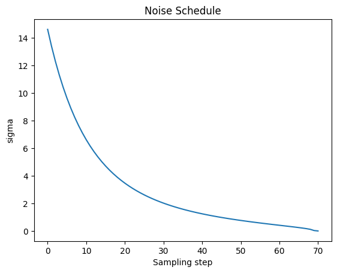
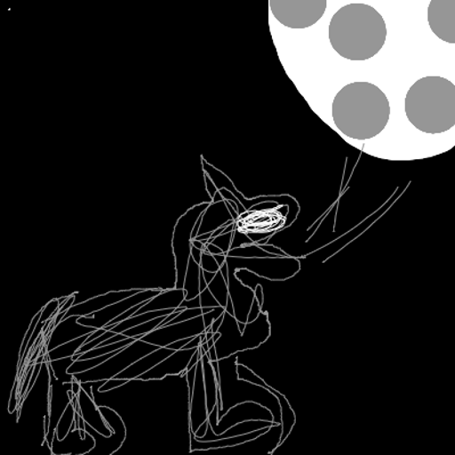

An Image-to-Image Implementation
Text-Guided: Image-to-Image Implementation
This Python code demonstrates the implementation of the Image-to-Image technique, allowing you to generate new images from existing ones with the help of textual prompts.
Explore how this innovative approach combines images and text to create visually compelling artworks. Dive into the code to understand the mechanics behind this cutting-edge image generation technique.
Importing utilities (click to show/hide)
from transformers import CLIPTextModel, CLIPTokenizer
import torch
from diffusers import LMSDiscreteScheduler
from PIL import Image
from tqdm.auto import tqdm
from diffusers import AutoencoderKL, UNet2DConditionModel
import logging
from fastdownload import FastDownload
from pathlib import Path
from huggingface_hub import notebook_login
import matplotlib.pyplot as plt
from torchvision import transforms
if not (Path.home()/'.cache/huggingface'/'token').exists(): notebook_login()
logging.disable(logging.WARNING)We need to load in the required libraries and set up the models.
tokenizer = CLIPTokenizer.from_pretrained(
"openai/clip-vit-large-patch14", torch_dtype=torch.float16)
text_encoder = CLIPTextModel.from_pretrained(
"openai/clip-vit-large-patch14", torch_dtype=torch.float16).to("cuda")
# Here we use a different VAE to the original release, which has been fine-tuned for more steps
vae = AutoencoderKL.from_pretrained(
"stabilityai/sd-vae-ft-ema", torch_dtype=torch.float16).to("cuda")
unet = UNet2DConditionModel.from_pretrained(
"CompVis/stable-diffusion-v1-4", subfolder="unet", torch_dtype=torch.float16).to("cuda")Define the parameters.
plt.plot(scheduler.sigmas)
plt.title('Noise Schedule')
plt.xlabel('Sampling step')
plt.ylabel('sigma')
plt.show()
def prep_img(img_link : str) -> torch.Tensor:
"""
Preprocesses an image from a given link.
Args:
img_link (str): The URL or path to the image file.
Returns:
torch.Tensor: A tensor representing the preprocessed image.
"""
p = FastDownload().download(img_link)
init_image = Image.open(p).convert("RGB").resize((512, 512))
return transforms.ToTensor()(init_image)The image we will use as a starting point.
Downloading the image (click to show/hide)

def tokenization(prompt: list, max_len : int = None) - > torch.Tensor:
"""
Tokenizes a text prompt and returns the corresponding encoded tensor.
Args:
prompt (list): The input text prompt to be tokenized.
max_len (int, optional): The maximum length of the tokenized sequence. If not specified,
it defaults to the maximum length allowed by the tokenizer.
Returns:
torch.Tensor: A tensor containing the encoded representation of the tokenized prompt.
"""
if max_len is None : max_len = tokenizer.model_max_length
tokenized_prompt = tokenizer(prompt, padding="max_length", max_length = max_len, truncation=True, return_tensors='pt')
return text_encoder(tokenized_prompt.input_ids.to('cuda'))[0].half()
def make_image(latent: torch.Tensor):
"""
Converts a tensor representation of an image into a PIL Image.
Args:
latent (torch.Tensor): A tensor representing an image.
Returns:
PIL.Image.Image: A PIL Image representing the image.
"""
image = (latent/2+0.5).clamp(0,1).detach().cpu().permute(1, 2, 0).numpy()
return Image.fromarray((image*255).round().astype("uint8"))Denoising loop
To ensure the effectiveness of this solution, it is essential to incorporate the “start_step” parameter.
Essentially, we aim to prevent excessive noise from being added to the input image, particularly avoiding the most intense noise additions.
After this initial step, we can proceed with the looping process.
In summary, the key to success here is to introduce the “start_step” parameter, which helps us avoid excessive noise in the early stages and then continue with the loop as intended.
def create_sample(prompt: list,transformed_image: torch.Tensor ,guidance_scale: float = 7.5, seed: int = 5, steps: int = 70,start_step: int = 10):
'''
Generate a sample image based on a text prompt, provided image and guidance parameters.
Args:
prompt (list): A list of text prompts.
transformed_image (torch.Tensor): A tensor representing the transformed image.
guidance_scale (float, optional): The scale factor for guiding the generation process.
seed (int, optional): Seed for random number generation. Default is 5.
steps (int, optional): The total number of steps for the generation process. Default is 70.
start_step (int, optional): The step at which the generation process starts. Default is 10.
Returns:
torch.Tensor: A tensor representing the generated sample.
This function generates an image based on the provided text prompts , transformed image and parametrs.It uses a predefined
VAE model to encode the image and then applies noise and guidance to generate the sample.It iteratively
refines the image by adding noise and updating the latent representation. The guidance scale controls the
influence of the text prompts on the image. The generated image is returned as a PyTorch tensor.
Example:
>>> prompt = ["Translate the following English sentence to French: 'Hello, how are you?'"]
>>> transformed_image = prep_img(image_link)
>>> generated_sample = create_sample(prompt, transformed_image)
'''
bs = 1 # Implementation for only a single prompt.
text = tokenization(prompt)
uncond = tokenization([""] * bs, text.shape[1])
emb = torch.cat([uncond, text])
if seed:
torch.manual_seed(seed)
# Encode image
image_latent = vae.encode((transformed_image.unsqueeze(0).half().to('cuda'))).latent_dist.sample()
image_latent = vae.config.scaling_factor * image_latent
# Create noise
scheduler.set_timesteps(steps)
noise_latents = torch.randn_like(image_latent)
latents = scheduler.add_noise(image_latent, noise_latents,
timesteps=torch.tensor([scheduler.timesteps[start_step]]))
for i, ts in enumerate(tqdm(scheduler.timesteps)):
if i >= start_step: # Skip the batches of noise that don't affect the input image.
inp = scheduler.scale_model_input(torch.cat([latents] * 2), ts)
with torch.no_grad():
noise_pred_uncond, noise_pred_text = unet(inp, ts, encoder_hidden_states=emb).sample.chunk(2)
pred = noise_pred_uncond + guidance_scale * (noise_pred_text - noise_pred_uncond)
latents = scheduler.step(pred, ts, latents).prev_sample
with torch.no_grad():
return vae.decode(1 / 0.18215 * latents).sample